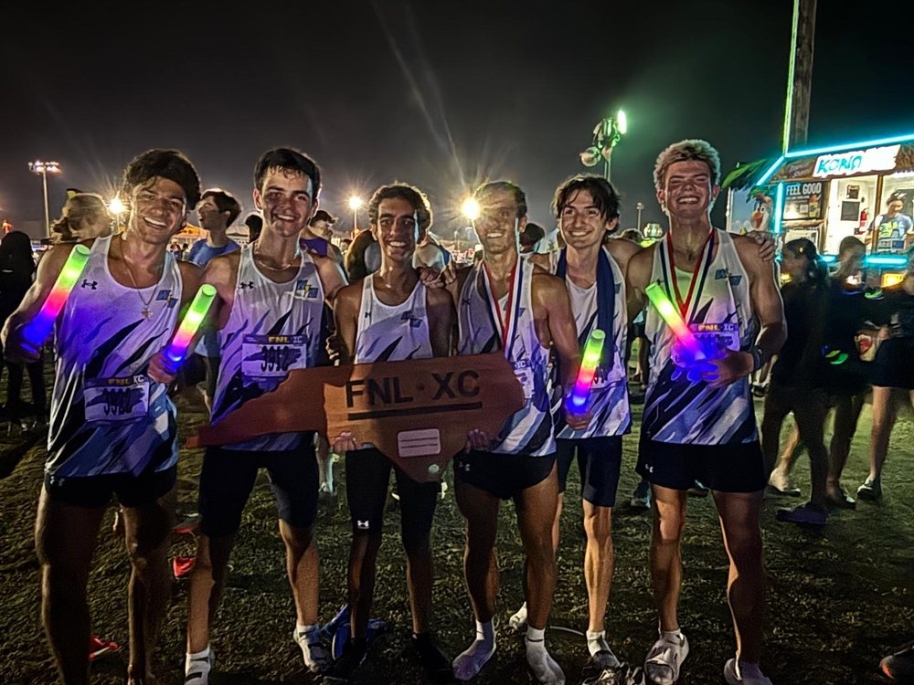
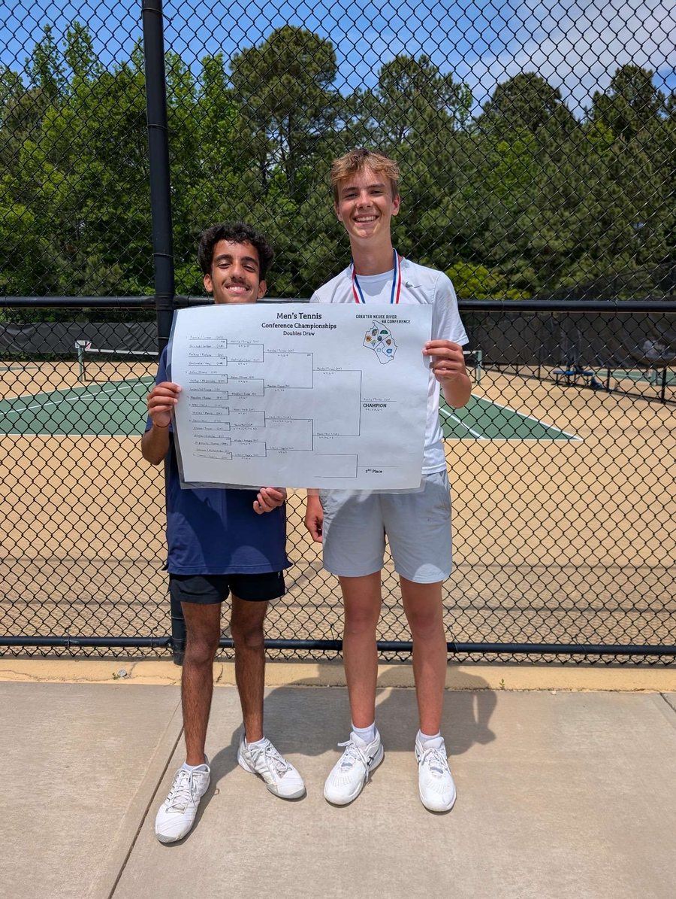
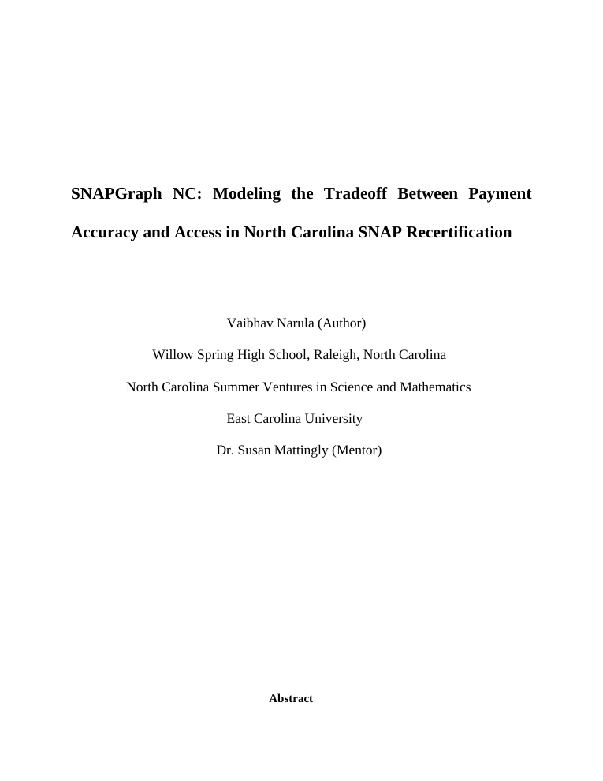
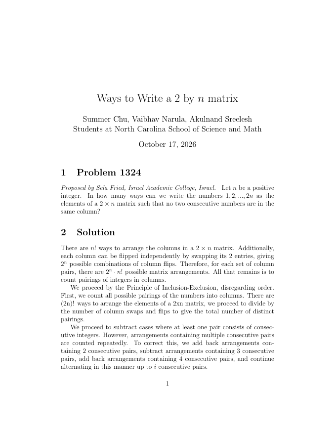

<meta name="claude:viewport-fit-sides" content="cover">
<title>Vaibhav Narula</title>
<meta name="description" content="Vaibhav Narula builds math models for public-service problems in North Carolina.">
<link rel="preconnect" href="https://fonts.googleapis.com">
<link rel="preconnect" href="https://fonts.gstatic.com" crossorigin>
<link rel="stylesheet" href="https://fonts.googleapis.com/css2?family=Gaegu:wght@400;700&family=Patrick+Hand&display=swap">
<style>
/* Graph-paper notebook. One pen blue, one highlighter yellow, lots of empty space. */
:root{
  --paper:#F7F2E4; --paper-2:#EFE9D7; --grid:rgba(60,70,110,.07);
  --ink:#1E2230; --pencil:#7A7766; --rule:#D8D2BE;
  --pen:#2F4FA3; --mark:#F1E49B; --mark-strong:#E9B824;
  --display:'Gaegu','Patrick Hand','Comic Sans MS',cursive;
  --hand:'Patrick Hand', 'Comic Sans MS', cursive;
  --mono:'Patrick Hand','Comic Sans MS',cursive;
  --sans:'Patrick Hand','Comic Sans MS',cursive;
  color-scheme:light;
}
*{box-sizing:border-box}
html{scroll-behavior:smooth;scroll-padding-top:70px}
body{
  margin:0;background-color:var(--paper);color:var(--ink);
  background-image:linear-gradient(var(--grid) 1px,transparent 1px),linear-gradient(90deg,var(--grid) 1px,transparent 1px);
  background-size:28px 28px;
  font-family:var(--sans);font-size:19px;line-height:1.55;
  padding-left:max(16px,env(safe-area-inset-left,0px));padding-right:max(16px,env(safe-area-inset-right,0px));
  -webkit-font-smoothing:antialiased;
}
body::after{content:"";position:fixed;inset:0;z-index:0;pointer-events:none;opacity:.5;mix-blend-mode:multiply;background-image:url("data:image/svg+xml;utf8,<svg xmlns='http://www.w3.org/2000/svg' width='220' height='220'><filter id='n'><feTurbulence type='fractalNoise' baseFrequency='.9' numOctaves='2' stitchTiles='stitch'/><feColorMatrix values='0 0 0 0 .45  0 0 0 0 .4  0 0 0 0 .3  0 0 0 .13 0'/></filter><rect width='100%' height='100%' filter='url(%23n)'/></svg>")}
main,.bar{position:relative;z-index:1}
body::before{content:"";position:fixed;inset:0 0 auto;height:env(safe-area-inset-top,0px);z-index:30;background:var(--paper)}
.wrap{max-width:1040px;margin:0 auto}
a{color:var(--pen);text-underline-offset:3px}
:focus-visible{outline:2px solid var(--pen);outline-offset:3px;border-radius:3px}
::selection{background:var(--mark)}
h1,h2,h3{font-family:var(--display);font-weight:400;margin:0;text-wrap:balance}
p{margin:0}
em{font-style:normal;color:inherit;background:linear-gradient(transparent 62%,var(--mark) 62%)}
.label{font-family:var(--mono);font-size:12px;letter-spacing:.16em;text-transform:uppercase;color:var(--pencil);margin-bottom:28px}

.bar{position:sticky;top:env(safe-area-inset-top,0px);z-index:20;background:var(--paper)}
.bar .wrap{display:flex;align-items:center;justify-content:space-between;gap:16px;padding-block:16px}
.brand{font-family:var(--mono);font-size:12.5px;letter-spacing:.14em;text-transform:uppercase;color:var(--ink);text-decoration:none;font-weight:500}
.bar nav{display:flex;gap:26px}
.bar nav a{font-family:var(--mono);font-size:12px;letter-spacing:.14em;text-transform:uppercase;color:var(--pencil);text-decoration:none;border-bottom:2px solid transparent;padding:2px 0}
.bar nav a:hover{color:var(--ink)}
.bar nav a.on{color:var(--ink);border-bottom-color:var(--mark-strong)}
.bar::after{content:"";position:absolute;left:0;bottom:0;height:2px;width:var(--p,0%);background:var(--pen)}

.btn{font-family:var(--mono);font-size:12.5px;letter-spacing:.12em;text-transform:uppercase;color:var(--ink);background:transparent;text-decoration:none;padding:11px 20px;display:inline-block;cursor:pointer;border:1.5px solid var(--ink);border-radius:255px 14px 225px 14px/14px 225px 14px 255px;transition:background .15s,transform .15s}
.btn:hover{background:var(--mark);transform:translateY(-1px) rotate(-.5deg)}
.btn.solid{background:var(--ink);color:var(--paper)}
.btn.solid:hover{background:var(--pen)}
.hl{background:linear-gradient(transparent 58%,var(--mark) 58%);background-repeat:no-repeat;background-size:0% 100%;animation:sweep .9s .6s ease forwards;padding:0 2px}
@keyframes sweep{to{background-size:100% 100%}}
.note{font-family:var(--hand);font-size:21px;line-height:1.25;color:var(--pen)}

/* hero */
.hero{padding-block:56px 110px}
.hero-grid{display:grid;grid-template-columns:minmax(0,1fr) minmax(0,1.1fr);gap:56px;align-items:center}
.hero h1{font-size:clamp(52px,8vw,100px);line-height:.96;letter-spacing:-.025em;margin-bottom:26px}
.lede{font-size:20px;max-width:21em;margin-bottom:34px}
.cta{display:flex;flex-wrap:wrap;gap:14px}
.mapcard{position:relative;padding-top:6px}
.mapcard svg{width:100%;height:auto;display:block;overflow:visible}
.mapcard .cty{fill:transparent;stroke:var(--ink);stroke-width:.55;stroke-linejoin:round;transition:fill .12s}
.mapcard .cty:hover,.mapcard .cty.on{fill:var(--mark)}
.mapcard .out{fill:none;stroke:var(--ink);stroke-width:2;stroke-linejoin:round}
.maplabel{font-family:var(--mono);font-size:12px;letter-spacing:.12em;text-transform:uppercase;margin-top:10px;display:flex;justify-content:space-between;gap:10px;flex-wrap:wrap}
.maplabel span:last-child{color:var(--pencil)}
@media (max-width:860px){.hero{padding-block:30px 80px}.hero-grid{grid-template-columns:1fr;gap:44px}}

/* about */
.about{padding-block:90px;border-top:1px solid var(--ink)}
.about-grid{display:grid;grid-template-columns:minmax(0,1.1fr) minmax(0,1fr);gap:64px;align-items:start}
.about h2{font-size:clamp(17px,1.7vw,20px);line-height:1.55;max-width:26em;font-family:var(--sans);font-weight:400}
.roles{list-style:none;margin:0;padding:0}
.roles li{padding:20px 0;border-bottom:1px solid var(--rule)}
.roles li:first-child{padding-top:0}
.roles b{font-family:var(--display);font-weight:600;font-size:22px;display:block;line-height:1.25}
.roles .when{color:var(--pencil);font-family:var(--mono);font-size:12px;letter-spacing:.1em;text-transform:uppercase;display:block;margin:4px 0 10px}
.roles ul{margin:0;padding-left:18px;display:flex;flex-direction:column;gap:6px;font-size:15.5px}
.roles li::marker{color:var(--mark-strong)}
.roles>li{list-style:none}
.roles li li{padding:0;border:0}
.roles .rl{margin-top:14px;padding:8px 16px;font-size:12px}
.roles li li:first-child{padding-top:0}
@media (max-width:860px){.about{padding-block:64px}.about-grid{grid-template-columns:1fr;gap:40px}}

/* projects */
.projects{padding-block:90px 60px;border-top:1px solid var(--ink)}
.tabs{display:grid;grid-template-columns:repeat(3,minmax(0,1fr));gap:18px;margin-bottom:56px}
.tab{text-align:left;font:inherit;color:inherit;background:transparent;border:1.5px solid var(--ink);border-radius:6px;padding:22px 24px;cursor:pointer;transition:transform .15s,box-shadow .15s,background .15s}
.tab:hover{transform:translate(-2px,-2px);box-shadow:4px 4px 0 var(--ink)}
.tab[aria-selected="true"]{background:var(--mark);transform:translate(-2px,-2px);box-shadow:4px 4px 0 var(--ink)}
.tab .kind{font-family:var(--mono);font-size:11px;letter-spacing:.16em;text-transform:uppercase;color:var(--pencil);display:block;margin-bottom:8px}
.tab h3{font-size:clamp(22px,2.4vw,28px)}
.tab p{font-size:15px;color:var(--ink)}
@media (max-width:700px){.tabs{grid-template-columns:1fr;gap:12px}}
.panel[hidden]{display:none}
.panel-grid{display:grid;grid-template-columns:minmax(0,.9fr) minmax(0,1fr);gap:56px;align-items:start}
@media (max-width:860px){.panel-grid{grid-template-columns:1fr;gap:40px}}
.panel h3.ph{font-size:clamp(28px,3.6vw,40px);margin-bottom:14px}
.panel .info p{max-width:28em;margin-bottom:22px}
.points{margin:0 0 30px;padding:0;list-style:none;display:flex;flex-direction:column;gap:12px}
.points li{padding-left:24px;position:relative}
.points li::before{content:"";position:absolute;left:0;top:.55em;width:11px;height:11px;background:var(--mark-strong);border:1.5px solid var(--ink);border-radius:50%}
.venue{font-family:var(--mono);font-size:12px;letter-spacing:.06em;color:var(--pencil);margin:-6px 0 22px!important}
.small{font-family:var(--hand);font-size:20px;color:var(--pencil);margin-top:26px;line-height:1.3}

.pagebox{position:relative;max-width:440px;width:100%;margin-inline:auto;cursor:pointer}
.pagebox .sheetimg{background:#fff;border:1.5px solid var(--ink);box-shadow:6px 6px 0 var(--ink);aspect-ratio:612/792;overflow:hidden}
.pagebox img{width:100%;height:100%;object-fit:contain;display:block}
.pager{display:flex;align-items:center;gap:12px;margin:26px auto 0;max-width:440px}
.pager button{font-family:var(--mono);font-size:13px;width:40px;height:36px;border:1.5px solid var(--ink);background:transparent;color:var(--ink);border-radius:4px;cursor:pointer}
.pager button:hover{background:var(--mark)}
.pager button:disabled{opacity:.35;cursor:default;background:transparent}
.pager input{flex:1;min-width:0}
.pcount{font-family:var(--mono);font-size:12px;letter-spacing:.1em;color:var(--pencil);min-width:64px;text-align:right}
input[type=range]{width:100%;accent-color:var(--pen);height:22px}

/* fuquay model */
.model{display:flex;flex-direction:column;gap:20px;min-width:0}
.result{font-family:var(--display);font-size:22px;line-height:1.35;margin:0;text-wrap:balance;min-height:2.7em}
.result em{font-weight:600;background:linear-gradient(transparent 62%,var(--mark) 62%)}
.ctl label{display:flex;justify-content:space-between;gap:12px;font-size:14px;font-weight:600;margin-bottom:2px}
.ctl label span{font-family:var(--mono);font-weight:500;color:var(--pen)}
.stats{display:flex;flex-wrap:wrap;gap:8px 34px}
.stat .v{font-family:var(--display);font-size:32px;font-weight:600;font-variant-numeric:tabular-nums;line-height:1.1}
.stat .k{font-family:var(--mono);font-size:11px;letter-spacing:.06em;color:var(--pencil)}
.model svg{display:block;width:100%;height:auto}
.model svg text{font-family:var(--sans)}
details{font-size:14px}
summary{cursor:pointer;font-family:var(--mono);font-size:12px;letter-spacing:.1em;text-transform:uppercase;color:var(--pen)}
.tablewrap{overflow-x:auto;margin-top:8px}
table{border-collapse:collapse;width:100%;font-size:13.5px;font-variant-numeric:tabular-nums}
th,td{text-align:left;padding:6px;border-bottom:1px solid var(--rule)}
th{font-family:var(--mono);font-size:11px;letter-spacing:.06em;color:var(--pencil);font-weight:500}
td input{width:70px;font:inherit;color:var(--ink);border:1px solid var(--rule);border-radius:3px;padding:2px 4px;background:var(--paper)}

.go{font-family:var(--mono);font-size:12.5px;letter-spacing:.12em;text-transform:uppercase;color:var(--paper);background:var(--ink);border:0;border-radius:4px;padding:11px 18px;cursor:pointer;align-self:flex-start}
.go:hover{background:var(--pen)}
.cap{font-size:13px;color:var(--pencil);margin:0}
.panel .info .track{margin:0 0 4px}
/* trackers */
.track{margin-top:26px}
.track .steps{display:grid;grid-template-columns:repeat(4,minmax(0,1fr));gap:0;position:relative}
.track .st{position:relative;padding-top:20px;font-family:var(--mono);font-size:11px;letter-spacing:.1em;text-transform:uppercase;color:var(--pencil)}
.track .st::before{content:"";position:absolute;top:5px;left:0;right:0;height:2px;background:var(--rule)}
.track .st::after{content:"";position:absolute;top:0;left:0;width:12px;height:12px;border-radius:50%;background:var(--paper);border:1.5px solid var(--rule)}
.track .st.done{color:var(--ink)}
.track .st.done::before{background:var(--ink)}
.track .st.done::after{background:var(--ink);border-color:var(--ink)}
.track .st.now{color:var(--ink);font-weight:500}
.track .st.now::after{background:var(--mark-strong);border-color:var(--ink);box-shadow:0 0 0 4px var(--mark)}
.track .st:last-child::before{right:auto;width:0}
.track .what{font-size:14px;color:var(--pencil);margin-top:12px}
/* later */
.later{padding-block:80px;border-top:1px solid var(--ink)}
.later-grid{display:grid;grid-template-columns:repeat(2,minmax(0,1fr));gap:48px}
.later h3{font-size:24px;margin-bottom:4px}
.later p{color:var(--pencil);font-size:16px}
@media (max-width:560px){.later-grid{grid-template-columns:1fr;gap:28px}}

/* contact */
.contact{padding-block:90px 70px;border-top:1px solid var(--ink)}
.contact h2{font-size:clamp(36px,5vw,56px);margin-bottom:20px}
.mail{font-family:var(--mono);font-size:clamp(15px,2.4vw,21px);word-break:break-all;margin:0 0 24px}
.copied{font-family:var(--hand);font-size:20px;color:var(--pen);margin-left:12px}
@media (prefers-reduced-motion:reduce){html{scroll-behavior:auto}*{transition:none!important;animation:none!important}.hl{background-size:100% 100%}}

/* hand-lettered overrides */
.label,.brand,.bar nav a,.btn,.tab .kind,.maplabel,.track .st,.go,summary,th,.stat .k,.venue,.mail,.pcount,.pager button,.roles .when{text-transform:none;letter-spacing:.02em}
.label{font-size:26px;color:var(--ink);font-family:var(--display);font-weight:700}
.brand{font-family:var(--display);font-size:26px;font-weight:700}
.bar nav a{font-family:var(--display);font-size:23px;font-weight:700;font-variant:small-caps}
.btn{font-family:var(--display);font-size:22px;font-weight:700;padding:8px 20px}
.hero h1{font-weight:700;letter-spacing:0;font-size:clamp(60px,9.5vw,124px);line-height:.9;margin-bottom:22px}
.lede{font-size:26px;line-height:1.25;max-width:17em}
.about h2{font-size:clamp(24px,2.6vw,32px);line-height:1.35;max-width:22em;font-family:var(--display);font-weight:700}
.about h2 .w{color:inherit}
.about h2 .w.lit{color:var(--ink)}
.roles b{font-family:var(--display);font-weight:700;font-size:28px}
.roles .when{font-size:18px;color:var(--pencil)}
.tab h3,.panel h3.ph,.later h3,.contact h2{font-family:var(--display);font-weight:700}
.tab .kind{font-size:17px}
.stat .v{font-weight:700;font-size:38px}
.stat .k{font-size:16px}
.result{font-family:var(--display);font-weight:700;font-size:28px}
.maplabel{font-size:20px}
.mail{font-size:clamp(20px,3vw,30px)}
.small,.note{font-size:22px}
.cap,details{font-size:17px}
.mapcard .cty{stroke-width:.7}
.hint{display:flex;align-items:flex-end;gap:14px;margin-top:34px;font-family:var(--hand);font-size:24px;color:var(--pencil)}
.hint svg{width:38px;height:56px;color:#C8332B;overflow:visible;animation:bob 1.6s ease-in-out infinite}
@keyframes bob{50%{transform:translateY(9px)}}
.doodle{position:absolute;z-index:0;pointer-events:none;color:var(--ink);will-change:transform}
.doodle path,.doodle circle{fill:none;stroke:currentColor;stroke-width:2.2;stroke-linecap:round;stroke-linejoin:round}
.hero,.about,.projects,.contact{position:relative}
.about,.projects,.contact{border-top:0}
.sec-line{position:absolute;top:0;left:0;right:0;height:2px;background:var(--ink);transform:scaleX(0);transform-origin:left}
.anim .sec-line{transition:transform 1.1s cubic-bezier(.2,.7,.2,1)}
.sec-line.in{transform:none}
html:not(.anim) .sec-line{transform:none}
.anim .reveal{opacity:0;transform:translateY(38px) rotate(-1.2deg);transition:opacity .7s ease,transform .8s cubic-bezier(.2,.75,.2,1);transition-delay:var(--d,0s)}
.anim .reveal.in{opacity:1;transform:none}
.anim .pop{opacity:0;transform:translateY(30px) rotate(3deg) scale(.96);transition:opacity .7s ease,transform .9s cubic-bezier(.2,.8,.2,1.1)}
.anim .pop.in{opacity:1;transform:rotate(-1deg)}
.hero .wrap{position:relative;z-index:1}
@media (prefers-reduced-motion:reduce){.anim .reveal,.anim .pop{opacity:1;transform:none}.hint svg{animation:none}}

/* v2: photos, SRIP tab, spacing, dog */
.hero{padding-block:56px 170px}
.about{padding-block:150px 170px}
.projects{padding-block:150px 170px}
.contact{padding-block:150px 190px}
@media (max-width:860px){.hero{padding-block:30px 120px}.about{padding-block:110px 120px}.projects{padding-block:110px 120px}.contact{padding-block:110px 150px}}
.tabs{grid-template-columns:repeat(4,minmax(0,1fr))}
@media (max-width:980px){.tabs{grid-template-columns:repeat(2,minmax(0,1fr))}}
@media (max-width:560px){.tabs{grid-template-columns:1fr}}
.photos{position:relative;width:100%;max-width:520px;aspect-ratio:1/1.18;margin-inline:auto;justify-self:end}
.pol{position:absolute;margin:0;background:#FFFDF6;padding:10px 10px 46px;border:1.5px solid var(--ink);box-shadow:5px 5px 0 var(--ink);--r:0deg;--tx:0;--ty:0;transform:translate(calc(var(--tx)*1px),calc(var(--ty)*1px)) rotate(var(--r));transition:transform .45s cubic-bezier(.2,.8,.2,1),box-shadow .2s,opacity .8s ease,scale .3s;cursor:pointer;z-index:1}
.pol::before{content:"";position:absolute;top:-14px;left:50%;width:78px;height:24px;margin-left:-39px;background:rgba(233,184,36,.6);border:1px solid rgba(30,34,48,.22);transform:rotate(-3deg)}
.pol img{display:block;width:100%;height:auto;object-fit:cover}
.pol figcaption{position:absolute;left:14px;right:14px;bottom:9px;font-family:var(--hand);font-size:23px;line-height:1;color:var(--ink)}
.pol.a{--r:-4deg;left:0;top:0;width:68%}
.pol.a img{aspect-ratio:4/3}
.pol.b{--r:3.5deg;right:0;bottom:0;width:54%}
.pol.b img{aspect-ratio:4/5;object-position:center top}
.pol:hover,.pol:focus-visible{--r:0deg;box-shadow:8px 9px 0 var(--ink);scale:1.04;z-index:6}
.pol.top{z-index:5}
.anim .pol{opacity:0}
.anim .pol.in{opacity:1}
#kid{position:fixed;right:18px;top:0;width:112px;height:153px;z-index:15;pointer-events:none;will-change:transform;transition:transform .22s ease-out}
#kid svg{width:100%;height:100%;display:block;overflow:visible}
#kid .pk{display:none}
#kid.chute .pk-chute,#kid.fall .pk-fall,#kid.land .pk-land{display:inline}
#kid.chute svg{transform-origin:50% 6%;animation:sway 2.6s ease-in-out infinite alternate}
#kid .wave{transform-box:fill-box;transform-origin:0 100%;animation:wave .5s ease-in-out infinite alternate}
@keyframes sway{from{rotate:-6deg}to{rotate:6deg}}
@keyframes wave{from{transform:rotate(-12deg)}to{transform:rotate(14deg)}}
#ground{position:fixed;left:0;right:0;bottom:14px;height:0;border-top:2px dashed rgba(30,34,48,.25);z-index:14;pointer-events:none;opacity:0;transition:opacity .5s}
@media (prefers-reduced-motion:reduce){.pol{transition:none}#kid svg,#kid .wave{animation:none!important}}
@media (max-width:560px){.brand{font-size:20px;white-space:nowrap}.bar nav{gap:12px}.bar nav a{font-size:18px;white-space:nowrap}}
</style>

<header class="bar" id="bar"><div class="wrap">
  <a class="brand" href="#top">V. Narula</a>
  <nav aria-label="Sections">
    <a href="#about" data-s="about">About</a>
    <a href="#projects" data-s="projects">Projects &amp; Papers</a>
    <a href="#contact" data-s="contact">Contact</a>
  </nav>
</div></header>

<main id="top">

<section class="hero">
<div class="wrap"><div class="hero-grid">
  <div>
    <h1>Vaibhav Narula</h1>
    <p class="lede">I build <span class="hl">math models</span> for public-service problems in North Carolina.</p>
    <div class="cta">
      <a class="btn solid" href="#projects">See my work</a>
      <a class="btn" href="SNAPGraphNC-Paper.pdf">Read the paper</a>
    </div>
    <div class="hint" id="hint"><svg viewBox="0 0 38 56" aria-hidden="true"><path d="M19 2 C17 20 21 34 19 50 M6 38 C11 44 15 48 19 52 C24 47 29 43 33 37" fill="none" stroke="currentColor" stroke-width="3.2" stroke-linecap="round" stroke-linejoin="round"/></svg><span>scroll down, and poke the map</span></div>
  </div>
  <div class="mapcard" id="mapcard">
    <svg id="heromap" viewBox="0 0 960 400" role="img" aria-label="Map of North Carolina. Hover a county to see its name and population."></svg>
    <div class="maplabel"><span id="mapname">Wake County &#9733; home</span><span id="mappop">1,257,235 people</span></div>
  </div>
</div></div></section>

<section class="about" id="about" data-s="about"><div class="sec-line"></div><div class="wrap">
  <div class="about-grid">
    <h2 id="aboutline">Hi, I'm Vaibhav. I'm a senior in North Carolina and an NCSSM Online student. I like math and policy. When I'm not doing either, I'm running or playing tennis.</h2>
    <div class="photos" id="photos">
      <figure class="pol a" tabindex="0"><figcaption>xc, fnl night</figcaption></figure>
      <figure class="pol b" tabindex="0"><figcaption>conference doubles</figcaption></figure>
    </div>
  </div>
</div></section>

<section class="projects" id="projects" data-s="projects"><div class="sec-line"></div><div class="wrap">
  <div class="label reveal">Stuff I've built</div>
  <div class="tabs reveal" role="tablist" aria-label="Projects">
    <button class="tab" type="button" role="tab" data-sheet="snap" aria-selected="true"><span class="kind">Paper</span><h3>SNAPGraph NC</h3></button>
    <button class="tab" type="button" role="tab" data-sheet="srip" aria-selected="false"><span class="kind">Paper</span><h3>SRIP</h3></button>
    <button class="tab" type="button" role="tab" data-sheet="rural" aria-selected="false"><span class="kind">Model</span><h3>Rural Access NC</h3></button>
    <button class="tab" type="button" role="tab" data-sheet="bridge" aria-selected="false"><span class="kind">Model</span><h3>Policy Bridge NC</h3></button>
  </div>

  <div class="panel" id="sheet-snap" role="tabpanel"><div class="panel-grid">
    <div class="info">
      <h3 class="ph">SNAPGraph <em>NC</em></h3>
      <p>Where do eligible North Carolina families lose SNAP benefits, and what does checking harder cost them? I scored ten recertification steps to find out. My mentor was Dr. Susan Mattingly, and my subject matter expert was Dr. Maureen Berner at the UNC School of Government.</p>
      <div class="cta">
        <a class="btn solid" href="SNAPGraphNC-Paper.pdf">Read the paper</a>
        <a class="btn" href="paper.html">Web version</a>
      </div>
      
    </div>
    <div>
      <div class="pagebox pop" id="pagebox"><div class="sheetimg"></div></div>
      <div class="pager">
        <button type="button" id="prev" aria-label="Previous page">&larr;</button>
        <input type="range" id="pageslide" min="1" max="21" step="1" value="1" aria-label="Page">
        <button type="button" id="next" aria-label="Next page">&rarr;</button>
        <span class="pcount" id="pcount">1 / 21</span>
      </div>
    </div>
  </div></div>

  <div class="panel" id="sheet-rural" role="tabpanel" hidden><div class="panel-grid">
    <div class="info">
      <h3 class="ph">Rural Access <em>NC</em></h3>
      <p>Student-run service days that help rural residents get public benefits without a long drive. The planner picks the spots that cut the most miles.</p>
      <div class="track" aria-label="Status: Model"><div class="steps"><div class="st now">Model</div><div class="st">Research</div><div class="st">Pitch</div><div class="st">Launch</div></div><p class="what">Tracking: residents helped, average travel distance</p></div>
      <p class="small">A model, not a running program. Built on real NC county and Census data.</p>
    </div>
    <div class="model">
      <p class="result" id="ru-result"></p>
      <div class="ctl"><label for="ru-k">Service day locations <span id="ru-k-v">1</span></label>
        <input type="range" id="ru-k" min="1" max="12" step="1" value="1"></div>
      <div class="stats">
        <div class="stat"><div class="v" id="ru-avg">0 mi</div><div class="k">average trip</div></div>
        <div class="stat"><div class="v" id="ru-30">0%</div><div class="k">within 30 miles</div></div>
        <div class="stat"><div class="v" id="ru-max">0 mi</div><div class="k">longest trip</div></div>
      </div>
      <svg id="ru-map" viewBox="0 0 960 400" role="img" aria-label="Map of North Carolina counties with service day sites"></svg>
      <p class="cap">Yellow counties are rural. Dots are service day sites.</p>
      <svg id="ru-curve" viewBox="0 0 760 150" role="img" aria-label="Average trip as sites are added"></svg>
    </div>
  </div></div>

  <div class="panel" id="sheet-bridge" role="tabpanel" hidden><div class="panel-grid">
    <div class="info">
      <h3 class="ph">Policy Bridge <em>NC</em></h3>
      <p>Matching high school students from rural schools with attorneys and public officials. The matching is stable: no student and mentor would both rather swap partners.</p>
      <div class="track" aria-label="Status: Model"><div class="steps"><div class="st now">Model</div><div class="st">Research</div><div class="st">Pitch</div><div class="st">Launch</div></div><p class="what">Tracking: students matched, capstones completed</p></div>
      <p class="small">A model, not a running program. Students and mentors shown are examples.</p>
    </div>
    <div class="model">
      <p class="result" id="br-result"></p>
      <div class="ctl"><label for="br-w">Shared interests vs. distance <span id="br-w-v">60 / 40</span></label>
        <input type="range" id="br-w" min="0" max="100" step="5" value="60"></div>
      <button class="go" id="br-run" type="button">Run matching</button>
      <div class="stats">
        <div class="stat"><div class="v" id="br-fit">0%</div><div class="k">average fit</div></div>
        <div class="stat"><div class="v" id="br-dist">0 mi</div><div class="k">average distance</div></div>
        <div class="stat"><div class="v" id="br-rounds">0</div><div class="k">rounds</div></div>
      </div>
      <svg id="br-svg" viewBox="0 0 900 430" role="img" aria-label="Students matched to mentors"></svg>
      <p class="cap">Thicker line means a stronger fit. Yellow dot is a rural student.</p>
    </div>
  </div></div>
  <div class="panel" id="sheet-srip" role="tabpanel" hidden><div class="panel-grid">
    <div class="info">
      <h3 class="ph">Ways to Write a <em>2 by n</em> Matrix</h3>
      <p>A solution to a College Mathematics Journal problem about placing the numbers 1 to 2n in a 2 by n grid so that no two consecutive numbers share a column. I wrote it with Summer Chu and Akulnand Sreelesh at NCSSM's Summer Research Innovation Program, where I was 1 of 12 students picked from across the state.</p>
      <div class="cta"><a class="btn solid" href="SRIP-Paper.pdf">Read the paper</a></div>
    </div>
    <div>
      <div class="pagebox"><div class="sheetimg"></div></div>
    </div>
  </div></div>
</section>


<section class="contact" id="contact" data-s="contact"><div class="sec-line"></div><div class="wrap">
  <h2 class="reveal">Say hello.</h2>
  <p class="mail" id="mail">vaibhavnarula777@gmail.com</p>
  <button class="btn" type="button" id="copy">Copy address</button><span class="copied" id="copied" aria-live="polite"></span>
</div></section>

</main>

<script src="nc-data.js"></script>
<script src="widgets.js"></script>
<script src="app.js"></script>
<script src="scroll.js"></script>
